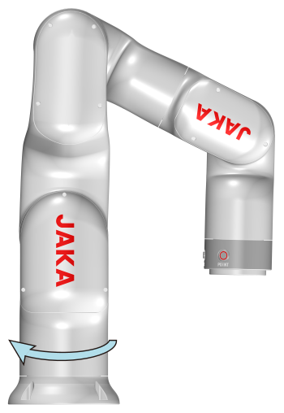
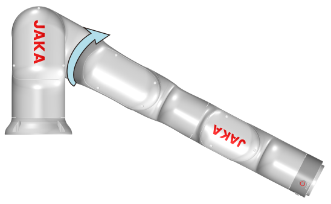
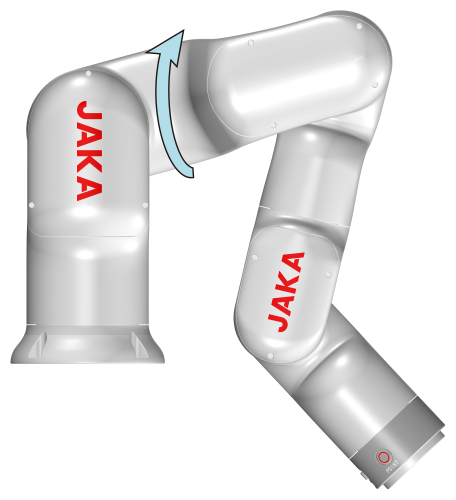
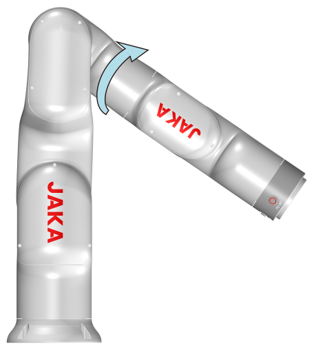
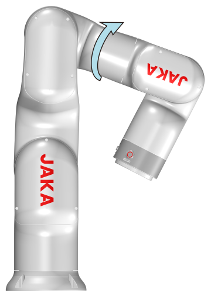

6. 技术规格
6.1. 技术参数
6.1.1. 机器人技术规格
型号 |
Mini2 |
Mini2C |
|---|---|---|
负载 |
2 kg (4.4 lb) |
|
重量 |
9.9 kg (21.8 Ib) |
|
工作半径 |
580 mm (22.8 in) |
|
重复定位精度 |
±0.05 mm (±0.002 in) |
±0.1 mm (±0.004 in) |
自由度 |
6 |
|
编程 |
图像化编程、拖拽编程 |
|
示教器类型 |
移动终端（电脑/平板/手机） |
|
协作操作 |
根据GB 11291.1-2011进行协同操作 |
|
动作范围 |
||
关节1 |
±360° |
|
关节2 |
±125° |
|
关节3 |
±130° |
|
关节4 |
±360° |
|
关节5 |
±120° |
|
关节6 |
±360° |
|
关节速度 |
||
关节1 |
180°/s |
|
关节2 |
180°/s |
|
关节3 |
180°/s |
|
关节4 |
180°/s |
|
关节5 |
180°/s |
|
关节6 |
180°/s |
|
工具端最大速度 |
1 m/s (3.3 ft/s) |
|
额定功率 |
180 W |
|
温度范围 |
0-50°C (32-122°F) 1 |
|
湿度范围 |
0~90% RH，非冷凝 |
|
IP等级 |
IP40 |
|
机器人安装 |
任意角度安装 |
|
底座直径 |
124 mm (4.9 in) |
|
工具I/O端口 |
数字输入 2 / 数字输出 2 / 模拟输入 2 |
|
工具I/O电源 |
24 V DC |
|
材质 |
铝合金、PC |
|
工具I/O尺寸 |
M8 |
|
机器人连接电缆长度 |
6 m (236 in) |
|
1 环境温度低于10℃时，使用机器人前请预热，否则机器人可能会停止或运行速率较低。
6.1.2. 控制柜技术规格
MiniCab Lite |
MiniCab Pro |
||
|---|---|---|---|
重量（kg） |
1.3 kg (2.9 Ib) |
||
尺寸（宽度*深度*高度） |
194*144*51 mm (7.6*5.7*2.0 in) |
||
防护等级 |
IP20 |
||
材质 |
铝 |
||
电压 |
48V DC |
||
通讯方式 |
网口 |
2*Ethernet（千兆） |
3*Ethernet（千兆） |
工业协议 |
TCP/IP，Modbus TCP，Modbus RTU，PROFINET，Ethernet/IP |
TCP/IP，Modbus TCP，Modbus RTU，PROFINET，Ethernet/IP，Ether CAT主站 |
|
I/O端口 |
8路数字输入、8路数字输出 |
||
I/O电源 |
24 VDC |
||
环境温度 |
0-50℃（32-122℉） |
||
环境湿度 |
10-90%RH |
||
海拔 |
≤1000 m (3281 ft) |
||
大气压 |
1 Bar |
||
6.2. 机械尺寸
6.2.1. 机器人外形尺寸
Mini 机器人的外形尺寸如下图所示。在安装时务必考虑到机器人的运动范围，以免伤害周围人员和设备。

图 6.1 外形尺寸图
6.2.2. 机器人工作空间
Mini 机器人的工作空间如下图所示，选择机器人安装位置时，必须考虑机器人正上方和正下方的圆柱体空间，尽可能避免机器人末端移动到此空间内。因为在此区域内，机器人临近奇异点，此时即使机器人末端笛卡尔空间运动较慢，也会导致关节运动过快。从而导致机器人工作效率低下，风险评估难以进行。

图 6.2 工作空间
6.2.3. 控制柜尺寸

图 6.3 控制柜外形尺寸
6.3. 电气规格
本章主要介绍控制柜接口和线束的电气规格和参数。
警告
在使用控制柜时，务必按照推荐的电气参数使用，达到或者超过极限参数可能会造成控制柜硬件损坏。
6.3.1. 电源电气规格
控制柜电气参数如下：
最小值 |
典型值 |
最大值 |
单位 |
|
|---|---|---|---|---|
电源输入 |
20 |
48 |
60 |
VDC |
6.3.2. I/O接口电气规格
数字输入和输出的设计遵循 IEC 61131-2，支持8路的数字输入和8路的数字输出。其电气规格如下表：
最小值 |
典型值 |
最大值 |
单位 |
|
|---|---|---|---|---|
电压 |
15 |
24 |
30 |
V |
电流 |
0.5 |
2 |
2.5 |
mA |
OFF区域 |
-3 |
0 |
8 |
V |
ON区域 |
15 |
24 |
30 |
V |
功能 |
/ |
NPN |
/ |
类型 |
IEC 61131-2 |
/ |
Type1 |
/ |
类型 |
典型值 |
单位 |
|
|---|---|---|
单通道电流 |
0.5 |
A |
电压降 |
1.8 |
V |
漏电流 |
0.5 |
mA |
功能 |
NPN |
类型 |
IEC 61131-2 |
Type1 |
类型 |
6.3.3. 典型功耗
控制柜典型功耗：
参数 |
数值 |
单位 |
|---|---|---|
待机功耗 |
9 |
W |
开机功耗 |
15 |
W |
机器人上电功耗 |
24 |
W |
6.4. 线路熔断
控制柜无内置保险丝。需加装外置保险丝（时延型）或断路器（K类）。下表显示了外置保险丝或断路器的推荐额定值。
机器人型号 |
电压等级 |
推荐额定值 |
|---|---|---|
Mini2，Mini2C |
125 VDC，单相 |
10 A |
6.5. 剩余电流
请根据以下控制柜剩余电流数据提供外部接地故障保护（剩余电流装置，RCD）：
机器人型号 |
控制柜中的剩余电流 |
|---|---|
Mini2，Mini2C |
＜30 mA |
6.6. 指示灯
6.6.1. 机器人指示灯
Mini 机器人在底座有一环形指示灯，其颜色指示含义如下表。

图 6.4 环形指示灯
颜色 |
工作状态 |
|---|---|
蓝色 |
上电未使能 |
绿色 |
使能完成 |
红色 |
故障/保护性停止 |
黄色 |
拖拽模式 |
黄色快闪 |
暂停 |
黄色快闪 |
单步调试 |
6.6.2. 控制柜指示灯
6.6.2.1. MiniCab Lite指示灯
MiniCab Lite 有一个指示灯，位于前面板，颜色定义如下。

图 6.5 指示灯位置
名称 |
功能 |
|---|---|
电源指示灯 |
绿色常亮：控制柜上电 |
6.6.2.2. MiniCab Pro指示灯
MiniCab Pro 有两个指示灯，分别为电源指示灯和状态指示灯，两个指示灯均位于前面板。
6.6.2.2.1. 电源指示灯

图 6.6 电源指示灯
电源指示灯颜色定义如下。
颜色 |
功能 |
|---|---|
绿色常亮 |
控制柜上电 |
6.6.2.2.2. 状态指示灯

图 6.7 状态指示灯
状态指示灯颜色定义如下。
颜色 |
功能 |
|---|---|
蓝色 |
机器人已上电、未使能 |
绿色 |
机器人已使能 |
红色 |
机器人故障 |
黄色 |
拖拽模式 |
黄色快闪 |
暂停模式 |
6.7. 按钮
6.7.1. 末端法兰按钮
机器人在末端法兰侧边配有工具I/O接口及两个按钮，按钮分别为拖拽按钮（FREE），与记录点位按钮（POINT），如下图所示。

图 6.8 末端法兰按钮
当拖拽按钮按下，机器人进入拖拽示教模式，在此模式下，用户可以直接拖动机器人至期望点。
记录点位按钮需配合机器人操作软件 Coboπ 使用，当记录点位按钮按下时，操作软件会记录相应的位置（具体操作见 Coboπ 软件用户手册）。
警告
使用拖拽按钮前，需要充分评估可能存在的风险，必须确保机器人的安装姿态、末端负载与TCP等参数已设置准确， 否则可能造成人身伤害或设备损毁。
6.7.2. 控制柜按钮
6.7.2.1. MiniCab Lite按钮

图 6.9 电源按钮
MiniCab Lite 电源按钮位于前面板，用于控制开关机，方式如下：
开机： 短按1秒电源按钮后松开，控制柜开机。
关机： 长按电源按钮3秒以上，控制柜关机。
6.7.2.2. MiniCab Pro按钮
6.7.2.2.1. 电源按钮

图 6.10 电源按钮
MiniCab Pro 电源按钮位于前面板，用于控制开关机，方式如下：
开机： 短按1秒电源按钮后松开，控制柜开机。
关机： 长按电源按钮3秒以上，控制柜关机。
6.7.2.2.2. 网络复位按钮

图 6.11 网络复位按钮
RST Wi-Fi：Wi-Fi密码复位按钮，长按10秒后，控制柜Wi-Fi恢复为初始值， 复位参数包括在Coboπ “Wi-Fi 设置 > AP设备配网” 界面配置的所有参数。
复位按钮孔直径为2mm，可使用1.5mm防静电一字螺丝刀按压此按钮。
6.8. 机器人标定姿态
机器人标定姿态即标定机器人时的姿态。机器人各关节连接处贴有标定刻线，用于机器人换关节后的标定。 当所有相邻刻线对齐时，表示机器人处于标定姿态。
关节一 |
关节二 |
关节三 |
关节四 |
关节五 |
关节六 |
|---|---|---|---|---|---|
0° |
0° |
0° |
0° |
0° |
0° |

图 6.12 机器人标定姿态
6.9. 机器人旋转方向
机器人旋转角度见 机器人技术规格 ，旋转方向如下图。

图 6.13 机器人旋转方向
6.10. 机器人奇异点
奇异点是以笛卡尔空间描述机器人位置的一些固有点位，对关节运动无影响。遇到奇异点时，首先考虑该运动是否可以使用关节运动。其次，若在机器人运动路径中间遇到奇异点，可以修改机器人运动路径以绕过奇异点。此外，也可以通过改变机器人安装位置或末端工具安装尺寸的方式，改变笛卡尔点位在机器人关节空间下的描述。
当机器人处于奇异点时，会产生以下影响：
在奇异点，机器人会缺失一个或多个方向的运动能力。
在奇异点附近，机器人无法找到一组合适的关节角度使TCP到达期望位置。
在奇异点附近，机器人需要较大的关节速度以达到期望的TCP速度。
奇异点附近的剧烈运动容易引发意外状况并缩短机器人关节寿命。
机器人存在三种类型的奇异点，分别为肩部奇异、肘部奇异和腕部奇异。奇异点描述及避免方式如下：
肩部奇异： 5、6关节轴线交点位于1、2关节轴线所在平面上时，机器人处于肩部奇异。

图 6.14 肩部奇异姿态
避免肩部奇异方式：
避免机器人末端法兰中心点位于机器人底座正上方。机器人正上方存在末端法兰中心无法到达的位置，且在靠近过程中易出现肩部奇异。
避免两个点的1关节相差180°左右时使用直线运动。两个点的1关节值相差180°左右时，有较大概率出现肩部奇异。此时需要使用关节运动，或在肩部奇异范围之外设置中间过渡点。
肘部奇异： 2、3、4关节共面时或关节3为0°时，机器人处于肘部奇异。

图 6.15 肘部奇异姿态
避免肘部奇异方式：
机器人出现肘部奇异时说明目标位置已经接近机器人工作范围极限。此时需调整机器人安装位置或延长末端工具长度。
腕部奇异： 4、6关节共线时或者当关节5为0°时，机器人处于腕部奇异。

图 6.16 腕部奇异姿态
避免腕部奇异方式：
机器人腕部奇异通常出现在有姿态变化的运动中，因此在姿态变化较大的情况下应优先使用关节运动，
尽量避免使用直线运动、圆弧运动等笛卡尔运动。
6.11. 手柄说明
JAKA机器人配备按键手柄，可以控制机器人及控制柜。手柄按键功能描述如下：

图 6.17 手柄按钮
名称 |
描述 |
|
|---|---|---|
1 |
急停按钮 |
急停用。 急停按钮仅作为紧急情况下使用，不可作为一般的关电设备使用。 |
2 |
开关按钮 |
开机： 短按开关按钮 1 s 后松开，蜂鸣器响，控制柜开机。 关机： 长按开关按钮3s以上，手柄蜂鸣6~7次，控制柜关机。 |
3 |
使能按钮 |
机器人上电： 机器人电源未打开情况下，短按使能按钮，等待机器人末端指示灯变为蓝色，机器人上电。 机器人下电： 机器人电源打开情况下，短按使能按钮，等待机器人末端指示灯熄灭，机器人下电。 机器人上使能： 电源打开情况下，先按住锁定按钮，再同时按使能按钮，机器人末端指示灯变为绿色，机器人上使能。 机器人下使能： 机器人使能情况下，先按住锁定按钮，再同时按使能按钮。机器人末端指示灯变为蓝色，机器人下使能。 |
4 |
启动/停止按钮 |
开始程序运行： 短按按钮，启动加载的默认程序，运行到程序的初始位置后，执行默认程序。 终止程序运行： 机器人运行程序时，短按程序终止按钮。 |
5 |
复位按钮 |
复位： 机器人使能后，在非运行程序过程时，长按控制机器人运行到 Coboπ 设置的初始姿态。当程序运行到此位置时，再次按住按钮，锁定提示灯为蓝色呼吸。 |
6 |
暂停/恢复按钮 |
暂停： 机器人自动运行过程中，按下暂停程序执行。 恢复： 机器人处于暂停状态时，按下该按钮恢复程序执行。 |
7 |
锁定按钮 |
锁定手柄： 长按锁定按钮3s，锁定提示灯为橙色呼吸。 解锁手柄： 长按锁定按钮3s，锁定提示灯熄灭。 组合功能： 其他按钮可与锁定按钮搭配使用。 |
8 |
锁定提示灯 |
锁定状态： 处于锁定状态时，锁定提示灯橙色呼吸。手柄处于锁定状态时，除锁定与开关按钮之外，其它按钮无效。可以通过App对机器人进行控制。 解锁状态： 处于解锁状态时，灯熄灭，可使用手柄。App界面灰色，不能使用App再对机器人进行任何控制。 |
9 |
手柄指示灯 |
控制柜上电过程中，手柄上的指示灯会以红、蓝、绿三种颜色交替闪烁，并发出三声蜂鸣提示，随后指示灯变为橙色，等待工控机启动。启动后，手柄指示灯呈现蓝色闪烁。 机器人上电后，手柄指示灯呈现蓝色闪烁。 机器人上使能后，手柄指示灯呈现绿色闪烁。 机器人处于急停和保护性停止状态时，手柄指示灯呈现红色闪烁。 |
备注
当控制柜完成上电后，按下任何按键，手柄会以每秒2次的频率蜂鸣。
使用手柄操作机器人时，请确保所操作的机器人在视线范围之内，并遵循相关安全守则，防止对机器人周边人员或设备造成伤害。
6.12. 性能规格
6.12.1. 机器人有效负载
机器人最大有效负载与重心偏置有关，重心偏置的多少受机器人末端法兰中心到负载质心的距离影响。下图为负载与重心偏置的关系图：
X轴：负载偏置距离
Y轴：负载

图 6.18 负载偏心图
备注
偏置距离指负载质心到机器人末端法兰面中心点的距离。
6.12.2. 安全停止时间和停止距离
JAKA机器人测试了自接收停止信号至完全停止的时间，包括不同臂展及运行速度下的数据（依据ISO 10218-1标准执行测试）。
安全停止时间是指从紧急停止按钮被按下或某一安全防护功能被触发到机器人运动停止所需的时间；停止距离则指在安全停止时间内机器人末端移动的距离。其中，紧急停止按钮被按下属于停止类别1（Cat. 1），触发安全防护功能属于停止类别2（Cat. 2）。在此时间段内，机器人仍在运动，具有对人体或其他设备造成伤害的可能性，因此使用人员、集成商在风险评估时应将此时间和距离考虑在内。
测试条件如下：
速度：100%，66%，33%；
臂展：100%，66%，33%；
100%臂展 |
66%臂展 |
33%臂展 |
|
|---|---|---|---|
关节1 |

|

|
 |

100%臂展 |
66%臂展 |
33%臂展 |
|
|---|---|---|---|
关节2 |
 |
 |

|


100%臂展 |
66%臂展 |
|
|---|---|---|
关节3 |
 |
 |


负载：见下表。
型号 |
负载 |
|---|---|
Mini2，Mini2C |
2 kg (4.4 lb) |
触发停止类别 1 和停止类别 2 的距离和时间见 附录 一：停止时间及停止距离 。
警告
关节内部制动器失效风险：
进行风险评估时，需考虑关节内部制动器可能发生故障。
需注意，JAKA机器人关节内部制动器仅能承受有限次数的制动操作。
未遵循上述说明可能导致人员死亡、重伤或设备损坏。
若控制系统发生供电中断，制动器将启动，但机器人机械装置可能偏离预定轨迹。
警告
机器人偏离预定轨迹的风险：
可将 24 V 电源缓冲装置（UPS）作为降低断电风险的措施之一。UPS 的容量、保持时间、接地方式和关机流程必须根据整机负载选型并验证。
必须验证采用 UPS 后机器人能够按预期停止，且安全功能不受影响；不得仅凭安装 UPS 假定机器人会沿原轨迹同步停止。
执行风险评估时，应考虑断电后可能偏离预定轨迹的区域。
未遵循上述说明可能导致人员死亡、重伤或设备损坏。
6.12.3. 机器人底座可承受力和转矩
下图为机器人底座应力的方向。

图 6.19 机器人底座力和转矩方向
下表为机器人底座各方向可承受的最大力和转矩。
Mini2, Mini2C |
|
|---|---|
Fx, Fy |
120 N (27 Ibf) |
Fz |
140 N (31 Ibf) |
Mx, My |
100 Nm (885 Ibf·in) |
Mz |
90 Nm (797 Ibf·in) |
小心
上表中的力和转矩为机器人可承受的最大值。这些值无法在同时达到最大！
6.12.4. 机器人法兰可承受扭矩
下表为机器人末端法兰可承受最大扭矩。
机型 |
Mini2, Mini2C |
|---|---|
扭矩 |
14 Nm (124 Ibf·in) |
评论